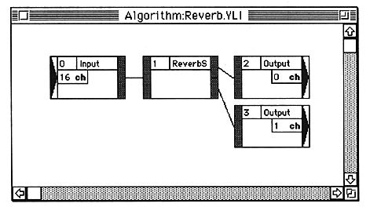

-
Click the port of the first module.
The port and the connection connected to it are selected.
To delete the connection, press the delete key or select “Clear” from the Edit menu.
-
Click on the port of the second module.
The first port and the second port are connected.
When you click on the second port, a check is made to see if it can be connected. If the connection cannot be established, the first selection is canceled and the second port is selected (considered as the first).
For example, you can connect as follows:

Caution Please note the following when connecting.
- Sound data can be branched from one output port to multiple input ports, but sound data can be split from multiple output ports to one input port. When mixing and inputting, the Mixer module must be used.
- There may be output ports for modules that are not connected, but all input ports must be connected.
Make a dummy connection to an empty input port. Adjust the parameters inside the module as necessary so that the dummy connection does not affect the sound data.